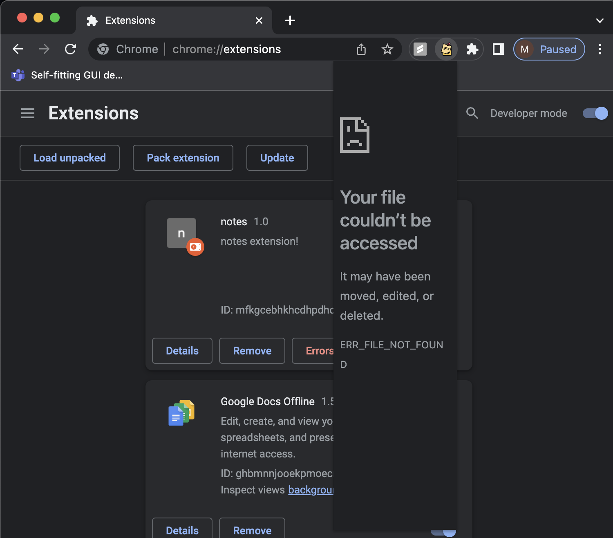
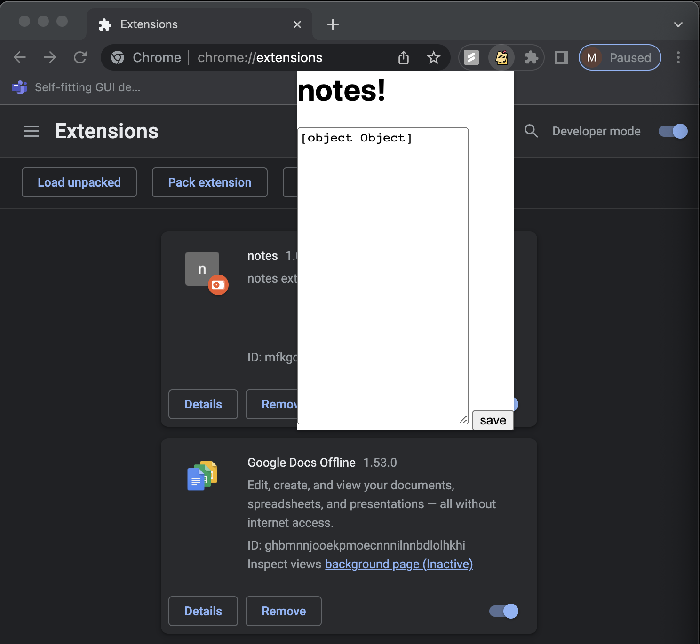
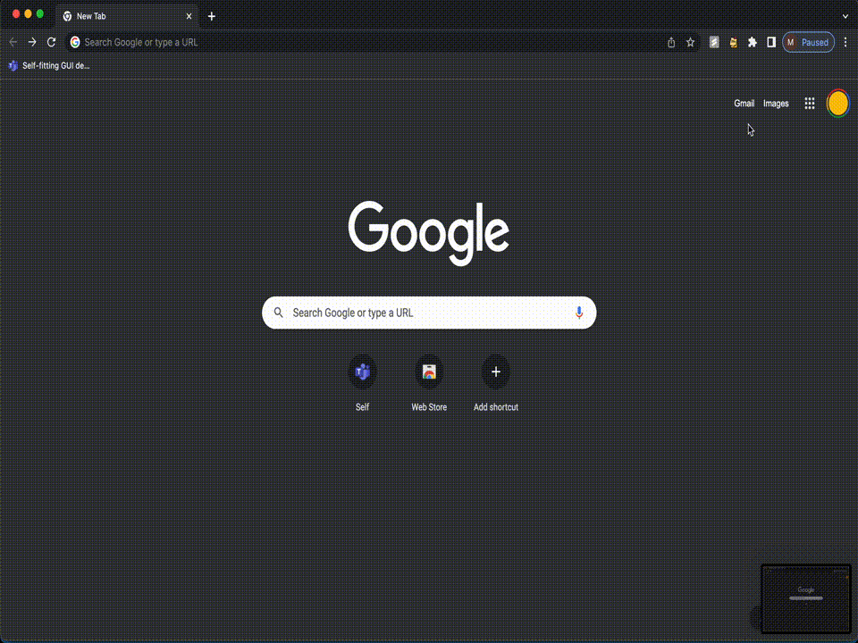

For this assignment, I started off by deciding what type of extension I would want to make
by thinking about what type of extension I would personally find useful. I realized that I
take a lot of notes when I'm looking at articles and websites, so I figured it could be helpful
to create a little notes extension. At this point, I figured that the basic functionality I
needed would just be the ability to jot down notes without having to open a notes app.
Setting up the extension HTML and getting to appear in my browser was actually pretty easy. First, I took the example given to us
(the background color extension) and worked off of that to create my file structure and all necessary components
manifest.json, icon.png, popup files, and content.js). One small problem that I had initially was when I uploaded my file into
chrome, it uploaded but would not display anything when I clicked it. I realized shortly after that I had copied over the manifest.json file
but forgot to rename the popup.html file properly. This reminded me that I need to be careful in copying over files that I use as a starter.

After I got the initial functionality of having an extension with a text box where you could write in, my next issue was in
storing the text. Every time I closed the extension, the text would be lost. At this point, I knew that I needed to store the information
using chrome.storage but had a hard time understanding how to access that text using the html file that I had. I also had trouble understanding
the correct syntax to use and what to reference. As a result, I kept getting "object object" when I would try to type something and
then reopen the extension.

After getting help from Hannah and being directed to chrome.storage's developer documentation, I shifted my syntax into a .then chain, and also
realized that I was accessing and storing the object of the text, not the actual text value. This was fixed when I added .value to my document.getElementById call.
All throughout the process, using the error messages in the chrome extension page as well as using the inspect tool on chrome were extremely helpful in finding
where my errors were.
Here is a demonstration of the final extension working!

For the future, I would want to make this note extension look better aesthetically, and add functionality where you could maybe have the extension be floating
chrome.storage.local.get(["key"]).then((result) => {
console.log("Value currently is " + result.key);
});